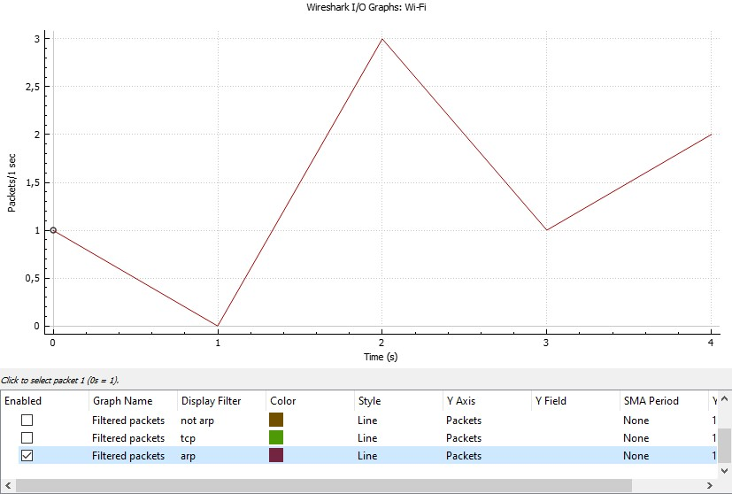
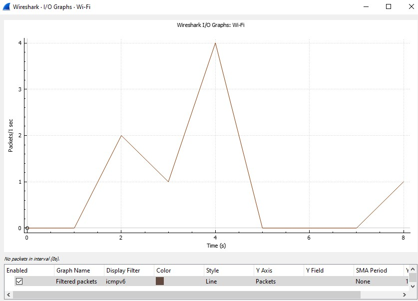
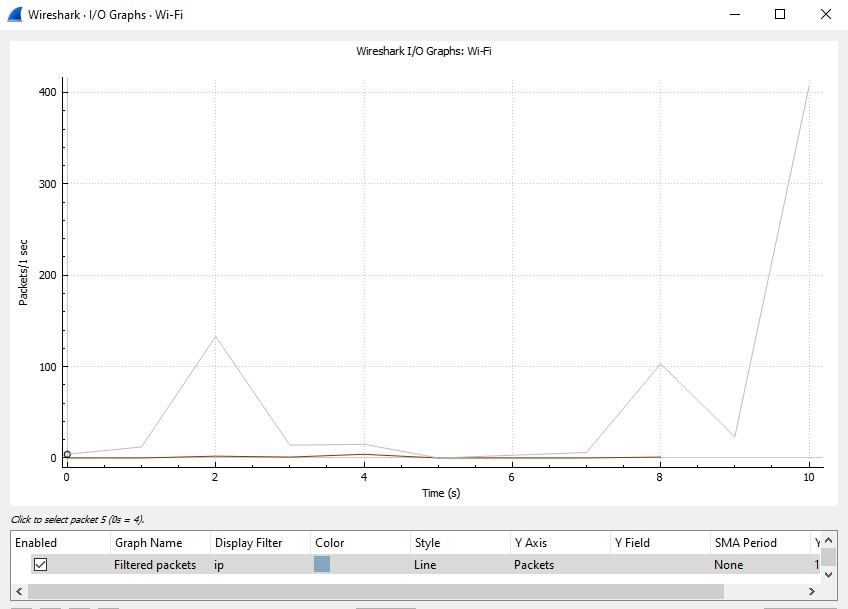
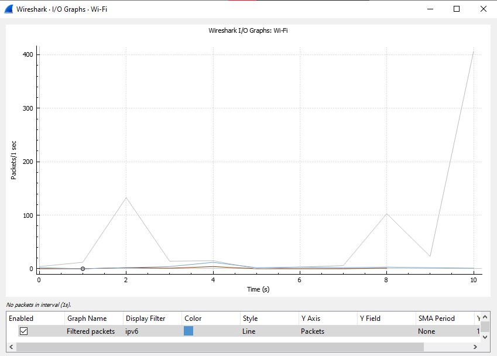
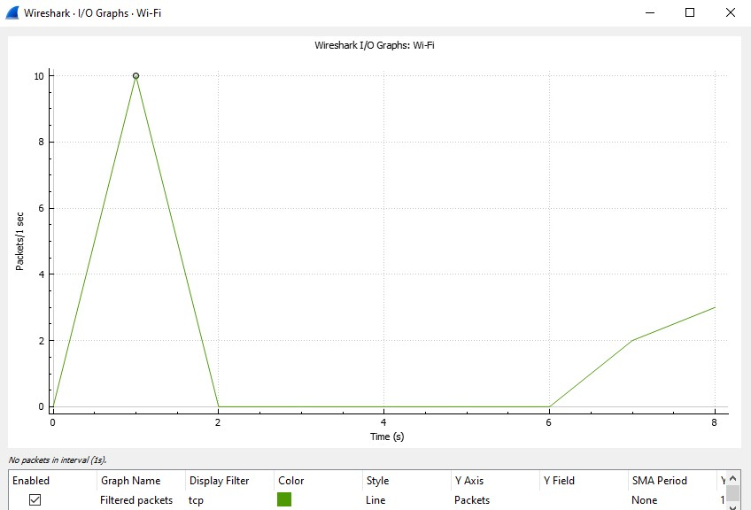
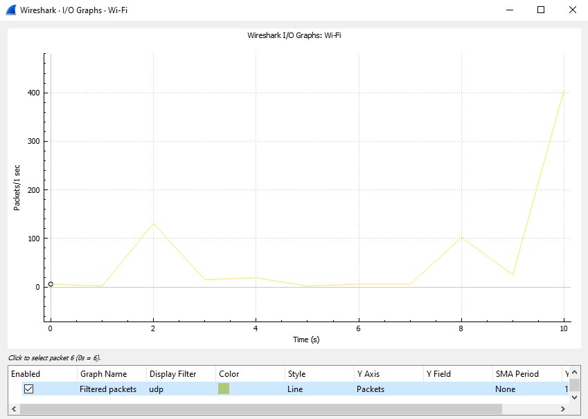

4.1
A)
1327 darab szkennelt keret mérete összesen:1184697 bájt
6 másodperc alatti hálózati forgalom átlagos sávszélessége: 4000 bájt/s
124 keret haladt át a hálózati kártyán 6 másodperc alatt
202 bájt a 6 másodperc alatt forgalmazott átlagos keretméret
B)
1,95
1,99
4.2
A)






Cisco: DC-77-4C
Asztali gép NIC modul MAC címe: 3C-A0-67-0A-FD-27
B)
Cisco: DC774C
HP: F80DAC
Apple: FC66CF
Xiaomi: FC1999
Huawei: E4D373
4.3
A)
Broadcast capture filter expression
B)
Virtuális gép és gazdagép fájlrendszere közötti kapcsolat (útvonalak): megosztott mappák, hálózat
4.4
A)
"Capture packets in promiscous mode" kikapcsolása
B)
ip.dst
4.5
A)
nem látható
B)
A '.' karakter a nem kiirható bájtokat jelenti.